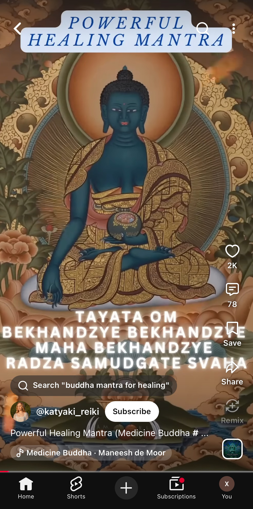
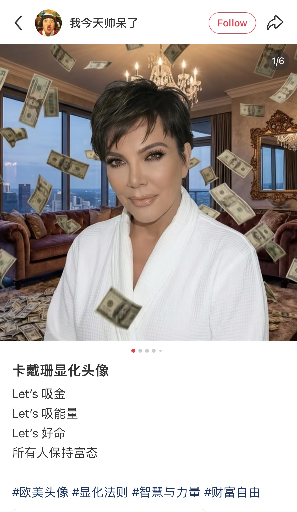
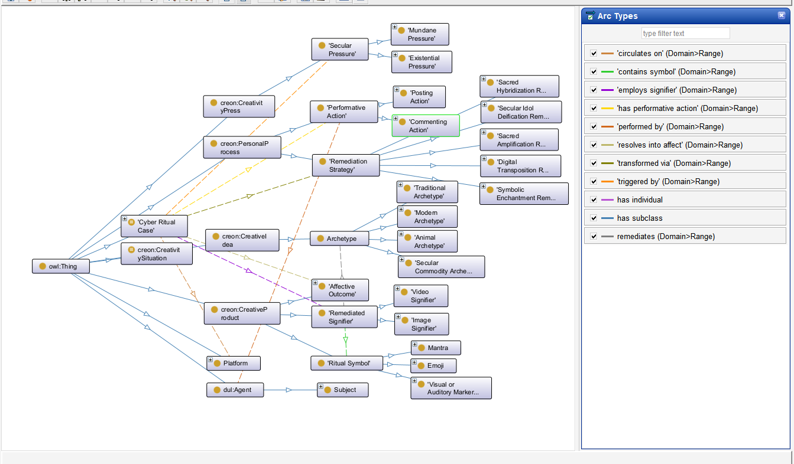

WishGraph
2.1 Conceptual Model Define the main dimensions of cyber-wishing
From Cases to Representational Dimensions
Before defining ontology classes and properties, we began by examining how cyber-wishing actually unfolds in concrete cases. Two contrasting examples were particularly useful for this abstraction: a Medicine Buddha wishing case, rooted in traditional Buddhist imagery, and a Kardashian manifestation case, rooted in contemporary celebrity and manifestation culture.
At first sight, the two cases appear very different. One draws on an established religious figure and an existing ritual tradition, while the other transforms a contemporary celebrity image into a symbolic resource for aspiration and manifestation. However, once the cases are decomposed into their functional components, a similar underlying structure becomes visible.
Medicine Buddha Wishing

In the Medicine Buddha case, a user encounters or circulates digitally mediated Buddhist imagery and performs a wishing-related action through the platform. The digital content retains recognizable ritual and religious references, but these references are now embedded in the interaction logic of social media. A personal or secular concern motivates the participation, while the symbolic act provides a way of expressing hope, reassurance, or emotional orientation.
Kardashian Manifestation

In the Kardashian manifestation case, the symbolic source is very different: the central figure comes from contemporary celebrity culture rather than a traditional religious system. Nevertheless, the image is similarly recontextualized through digital circulation and user participation. Posting, commenting, or engaging with the content becomes a performative act through which aspiration is articulated and the celebrity image acquires a function that goes beyond ordinary representation.
Despite their different cultural origins, the two cases can therefore be described through the same set of representational dimensions. In both cases, there is a subject who performs an action on a digital platform; the participation emerges in relation to a particular secular pressure; a digitally circulated remediated signifier mobilizes one or more ritual symbols and refers to a broader archetype; a particular remediation strategy explains how the symbolic material is transformed in the digital context; and the process ultimately leads toward an affective outcome.
These recurring dimensions form the conceptual basis of our ontology. Rather than treating the image, the user, or the symbolic object as the sole center of the model, we adopt a case-centered perspective: each cyber-ritual case functions as a hub that brings together actors, actions, platforms, pressures, symbolic materials, transformation processes, and affective consequences.
Figure 2.1 - diagram to be added
Figure 2.1 — Case-centered conceptual model of cyber-wishing. The central model abstracts the shared representational structure of the Medicine Buddha and Kardashian manifestation cases, while the two sides illustrate how the same conceptual dimensions are instantiated differently in concrete cyber-ritual practices.
2.2 Competency Questions Define what the ontology should be able to answer
Our CQs were therefore designed around the recurring relations identified in the conceptual model. Together, they move from the observable structure of a cyber-ritual case - who acts, what they do, and where - toward less immediately visible dimensions such as pressure, symbolic transformation, archetypal reference, and affective outcome.
What performative actions are carried out in each cyber-ritual case, who performs them, and on which platform does the case circulate?
This question captures the observable layer of participation. It requires the ontology to distinguish the cyber-ritual case itself from the subject who participates in it, the performative action carried out by that subject, and the digital platform in which the action occurs.
Which secular pressure triggers each cyber-ritual case, and what type of pressure is it?
Cyber-wishing is not represented as an isolated symbolic act. Each case is connected to a worldly concern, desire, uncertainty, or pressure that provides the context for participation. This question therefore introduces the motivational dimension of the model.
Which remediation strategy transforms each cyber-ritual case, and what outcome does the case resolve into?
This question focuses on the transformation process. It connects the way symbolic material is adapted, reproduced, augmented, aestheticized, sacralized, or otherwise remediated with the emotional or affective function produced by the cyber-ritual practice.
Which remediated signifier is employed in each cyber-ritual case, and which ritual symbols does it contain?
This question distinguishes the concrete digital object that circulates online from the symbolic elements mobilized within it. A meme, image, video, or other digital artifact is therefore not treated as equivalent to the ritual symbol it contains or evokes.
For each cyber-ritual case, which archetype is remediated by its signifier, and what type of archetype is it?
The final question moves from visible symbolic elements toward their broader cultural reference. It allows the ontology to represent how different digital signifiers may draw on traditional, contemporary, animal, religious, celebrity-related, or other archetypal sources while still participating in the same cyber-wishing structure.
More importantly, the questions provide a bridge between conceptual analysis and formal modelling. If a relation is required to answer a Competency Question, the T-Box must provide an appropriate class or property through which that relation can be represented.
2.3 T-Box Design Classes, hierarchy and properties
The conceptual dimensions and Competency Questions were subsequently formalized as an OWL 2 T-Box in Protege. At this stage, the informal distinctions developed in the previous sections become explicit ontology entities: concepts are represented through classes, relations through object properties, and additional descriptive facets through datatype properties.
Core Classes
The T-Box is organized around CyberRitualCase as its central class. This modelling
decision reflects both the research questions and the structure of our data: the unit we want to compare is the
cyber-ritual case as a whole.
The class system reflects the major dimensions identified during conceptual abstraction.
CyberRitualCase represents the unit of analysis, while classes for Performative Action,
Platform, Secular Pressure, Remediated Signifier, Ritual Symbol, Archetype, Remediation Strategy, and Affective
Outcome represent the principal components through which each case is described. The acting subject is
represented through the corresponding person / agent layer of the ontology.
CyberRitualCase
Central class. The unit of analysis: one cyber-ritual case as a whole, acting as the hub that links every other dimension.
Subject
The acting subject who performs the wishing practice (subclasses: Poster, Commenter).
PerformativeAction
The wishing-related action carried out on the platform (subclasses: Posting Action, Commenting Action).
Platform
The digital environment in which the case circulates (Xiaohongshu, Instagram, X, YouTube...).
SecularPressure
The worldly concern, desire, uncertainty or pressure that motivates participation (subclasses: Secular, Mundane, Existential Pressure).
RemediatedSignifier
The concrete digital object that circulates online and carries symbolic content (subclasses: Image Signifier, Video Signifier).
RitualSymbol
The symbolic element mobilized inside the signifier (subclasses: Mantra, Emoji, Visual or Auditory Marker).
Archetype
The broader cultural reference the signifier draws on (subclasses: Traditional, Modern, Animal, Secular Commodity Archetype).
RemediationStrategy
How the symbolic material is transformed in the digital context (subclasses: Digital Transposition, Sacred Amplification, Sacred Hybridization, Secular Idol Deification, Symbolic Enchantment).
AffectiveOutcome
The emotional or affective function the practice resolves into (anxiety relief, hope, reassurance, communal encouragement).
Object Properties
The object properties define how these conceptual dimensions are connected. They encode the paths through which the research questions can later be translated into graph patterns and queried over instantiated data.
| Property | Domain | Range | Meaning |
|---|---|---|---|
| hasSubject | CyberRitualCase | Subject | Attributes the case to the person or agent who acts. |
| hasPerformativeAction | CyberRitualCase | PerformativeAction | Records what is actually done (posting, commenting, reposting). |
| circulatesOnPlatform | CyberRitualCase | Platform | Places the case in its digital environment. |
| hasSecularPressure | CyberRitualCase | SecularPressure | Connects the case to the pressure that triggers it. |
| usesRemediatedSignifier | CyberRitualCase | RemediatedSignifier | Links the case to the digital object it circulates. |
| usesRitualSymbol | CyberRitualCase | RitualSymbol | Links the case to the symbolic elements it mobilizes. |
| hasArchetype | CyberRitualCase | Archetype | Points to the broader cultural reference behind the symbol. |
| hasRemediationStrategy | CyberRitualCase | RemediationStrategy | Describes how the symbolic material is transformed. |
| resultsInOutcome | CyberRitualCase | AffectiveOutcome | Closes the path from pressure to affective result. |
Datatype Properties
While object properties connect entities within the ontology, datatype properties attach literal information directly to specific resources. They carry the facet values that allow a single dimension instance to be typed along more than one axis - for example an archetype that is at once traditional and animal.
| Property | Domain | Values | Meaning |
|---|---|---|---|
| pressureType | SecularPressure | Secular / Mundane / Existential | Facet value telling the three layers of pressure apart. |
| signifierType | RemediatedSignifier | Image / Video | Facet value giving the modality of the circulating object. |
| archetypeType | Archetype | Traditional / Modern / Animal / Secular Commodity | Facet value that allows one archetype to be typed along several axes. |
| strategyType | RemediationStrategy | Transposition / Amplification / Hybridization / Deification / Enchantment | Facet value naming the transformation strategy. |

Figure 2.2 — The WishGraph T-Box in Protege (OntoGraf view).
Classes and their subclasses are shown as nodes, with the arc-type legend on the right listing the object
properties that connect them. The imported creon: classes come from the reused
Creative Work ontology design pattern.
The final T-Box thus provides a structured semantic container for the project: a case-centered ontology in which observable digital actions, contextual pressures, symbolic structures, remediation processes, and affective outcomes can be represented within the same graph.
With the schema established, the next step is to populate it with concrete data. Knowledge Extraction therefore moves from the terminological level of the ontology to its assertional level, transforming selected cyber-wishing materials into A-Box instances that can subsequently be explored and queried.